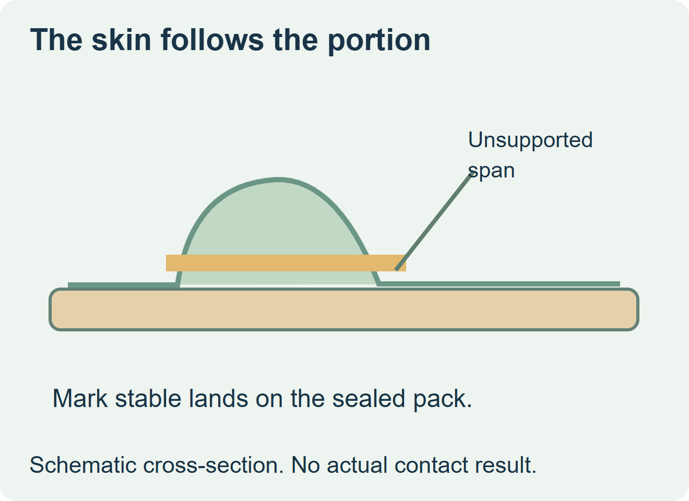
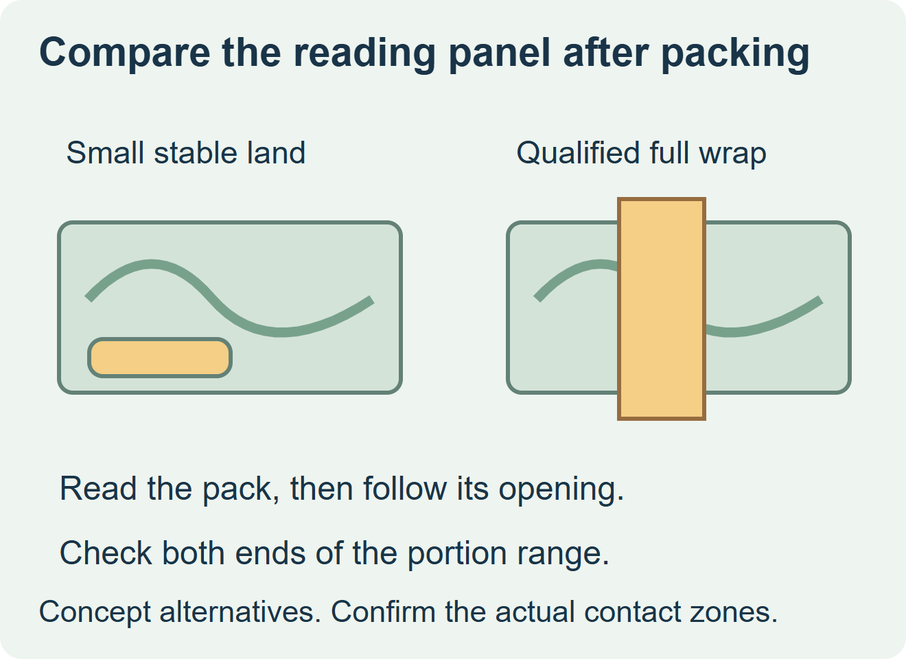

Use a small label on a stable land when the finished skin pack offers enough supported area for the required print. Compare a full wrap when the information area must extend around the pack and the line can apply a qualified construction with a readable panel. Evaluate the highest and lowest relevant product contours on sealed samples.


Map the surface after the skin follows the food
Mark the food peak, the sloping film, any hollow and the exposed board or tray region on actual packed samples. Also mark the opening tab and areas that need seal inspection. A label across a peak and the adjacent hollow may leave a bridge with little contact beneath part of its printed face. Decide which region can consistently support the artwork before changing adhesive.
MULTIVAC describes full-wrap labels that encircle four sides of food packs. Its collaboration with UPM Raflatac includes skin packs among the intended package types. Those examples provide an alternative to investigate when a top-only panel is insufficient. Ask for the machine-specific construction, landing and opening details. UPM statement on full-wrap package formats
| What the sealed specimens show | Route to quote | Review on the finished pack |
|---|---|---|
| Stable landing with enough visible information area | Individual label inside that landing | Attachment, readable fields and clear access to the intended opening. |
| Top contour is inconsistent and more print area is needed | Supported full-wrap proposal or another packaging-approved panel | Agreed contact zones, consistent print presentation and opening behavior. |
| Only the underside offers reliable support | Underside label if the conveyor and receiver can use it | Reachable base, label retention and the actual reading view. |
| No sample represents the relevant portion variation | Targeted additional filled sample | Keep the unsupported format outside the order approval. |


Check what the wrap contacts and what it spans
Ask the converter to identify any adhesive-free area and where the label is expected to bond or bridge. A full wrap may be designed to span a contour. Have the line team confirm how it will guide the pack and control the panel’s position. Keep the opening tab or any removal feature in the drawing. Compare real assemblies rather than adding a band to a photo.
For a hypothetical fish range, the tray stays the same while portion thickness changes. A narrow top label may work on one flat section. If the upper surface varies too much, price a full-wrap format whose supported reading area stays in the intended view. Repeat the sample and opening check on both portion states and record which proposal represents each one.
Purchase the accepted geometry and application together
Use the same filled-pack requirement for quotations and include conversion, roll specification, application work and accepted label quantity. Retain the board, film, portion and opening references with the trial. Package and process owners should assess integrity and material contact for the complete system. Request confirmation of any full-wrap supply and sample work for the actual project.
Discuss the unresolved label requirement
Send sealed production-style packs across the portion range, tray and film references, opening and seal map, field locations, station and quantities. Review food label options and prepare a label specification inquiry. The contact page opens an email draft and lists email or WhatsApp for attachments. Supply, proof options, testing, pricing and timing require project confirmation.